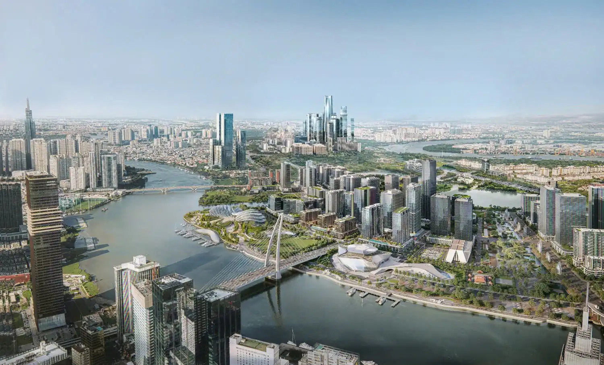
Thủ Thiêm · TP. Hồ Chí Minh
Khu đô thị phức hợpGa Thủ ThiêmTâm điểm kết nối mới của TP.HCM
Ý tưởng phát triển đô thị gắn với nhà ga Thủ Thiêm – nơi quy hoạch giao nhau của Metro số 2, đường sắt Thủ Thiêm – Long Thành và đường sắt tốc độ cao Bắc – Nam.
Đăng ký nhận thông tin sớm- 03Tuyến đường sắt quy hoạch
- TOD5.0Mô hình định hướng
- 15phútTrung tâm Tài chính Quốc tế
- 60phútSân bay Long Thành
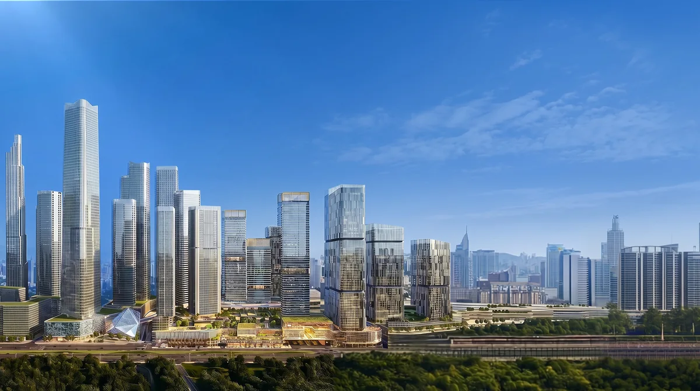
Giới thiệu Khu đô thị phức hợp Ga Thủ Thiêm
Khu đô thị phức hợp Ga Thủ Thiêm là ý tưởng phát triển đô thị gắn với nhà ga Thủ Thiêm – nơi quy hoạch giao nhau của tuyến Metro số 2, đường sắt Thủ Thiêm – Long Thành và đường sắt tốc độ cao Bắc – Nam.
Dự án định hướng theo mô hình TOD (phát triển đô thị gắn với giao thông công cộng), do SonKim Land phát triển, NIKKEN tư vấn quy hoạch và kiến trúc.
Nhà ga/Thương mại/Điểm đến
Đăng ký nhận thông tin sớm| Tên dự án | Khu đô thị phức hợp Ga Thủ Thiêm |
|---|---|
| Vị trí | Khu vực nhà ga Thủ Thiêm theo quy hoạch, gần nút giao An Phú, TP. Hồ Chí Minh |
| Nhà phát triển | SonKim LandNhà phát triển The Metropole Thủ Thiêm |
| Tư vấn quy hoạch & kiến trúc | NIKKEN (Nhật Bản) |
| Mô hình | TOD 5.0 – phát triển đô thị gắn với giao thông công cộng, nhà ga trở thành điểm đến |
| Kết nối đường sắt | Metro số 2 · đường sắt Thủ Thiêm – Long Thành · đường sắt tốc độ cao Bắc – NamTheo quy hoạch |
| Giai đoạn | Ý tưởng phát triểnQuy mô, sản phẩm và thông tin có thể điều chỉnh theo phê duyệt của cơ quan nhà nước có thẩm quyền |
TP.HCM bước vào giai đoạn phát triển mới
Đâu sẽ là tâm điểm mới đủ sức dẫn dắt dòng chảy kinh tế – tài chính, con người và kết nối quốc tế? Khu đô thị phức hợp Ga Thủ Thiêm nằm trong tầm nhìn và giai đoạn phát triển mới của TP. Hồ Chí Minh.
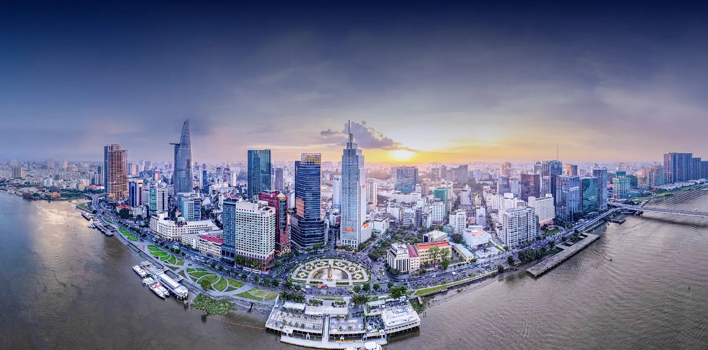
- 2030tầm nhìn
TP.HCM hướng tới trở thành trung tâm tài chính, công nghệ và đổi mới sáng tạo của khu vực vào năm 2030.
- IFCThủ Thiêm
Trung tâm Tài chính Quốc tế Việt Nam tại TP.HCM đặt tại Thủ Thiêm, mở ra khả năng kết nối dòng vốn quốc tế.
- 01tâm điểm
Thành phố cần một điểm kết nối hạ tầng trung tâm, nơi điều phối dòng chảy thương mại, đầu tư và con người.
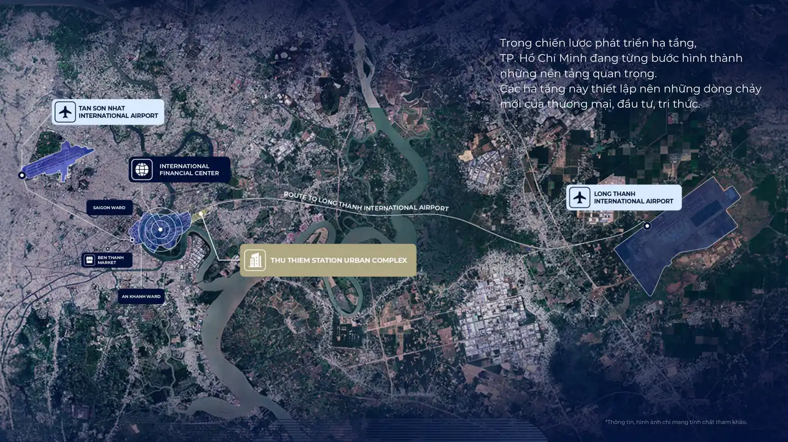
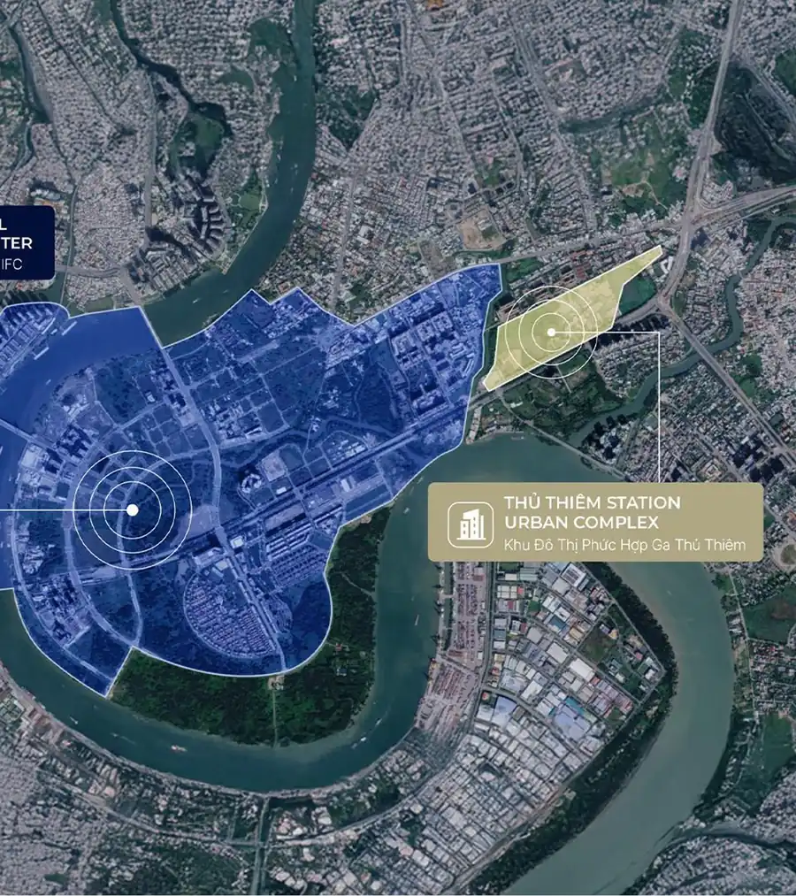
TP.HCM cần một điểm kết nối trung tâm, một tâm điểm hạ tầng mang tính chiến lược – nơi tập hợp các giá trị kinh tế và điều phối dòng chảy thương mại.
Vị trí – Khu vực nhà ga Thủ Thiêm, gần nút giao An Phú
"The Magnet of the City" – từ khu vực nhà ga, sáu điểm đến quan trọng của thành phố nằm trong bán kính 10 đến 60 phút di chuyển (thời gian tham khảo).
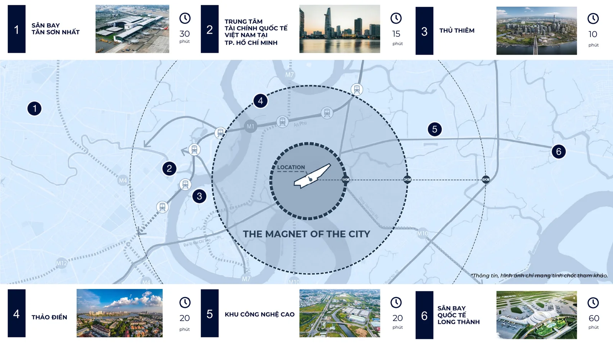
- 10′Khu đô thị mới Thủ Thiêm
- 15′Trung tâm Tài chính Quốc tế Việt Nam tại TP.HCM
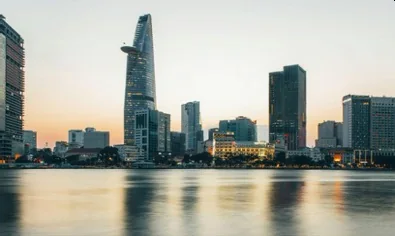
- 20′Thảo Điền
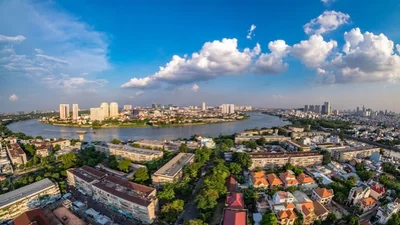
- 20′Khu Công nghệ cao
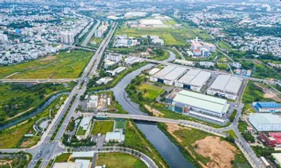
- 30′Sân bay Tân Sơn Nhất
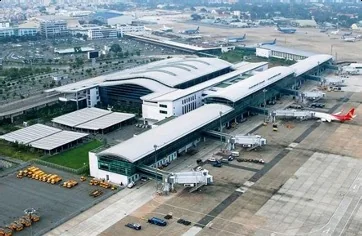
- 60′Sân bay quốc tế Long Thành
Thời gian di chuyển tham khảo theo tài liệu chủ đầu tư, phụ thuộc phương tiện, tuyến đường và tiến độ các công trình hạ tầng.
Nhà ga Thủ Thiêm – Điểm giao các tuyến đường sắt trọng yếu (theo quy hoạch)
Ga Thủ Thiêm được quy hoạch trở thành "siêu nhà ga" – nơi hội tụ mạng lưới tuyến metro và đường sắt: kết nối Metro số 2 về Bến Thành, Tân Sơn Nhất; đường sắt về sân bay Long Thành.
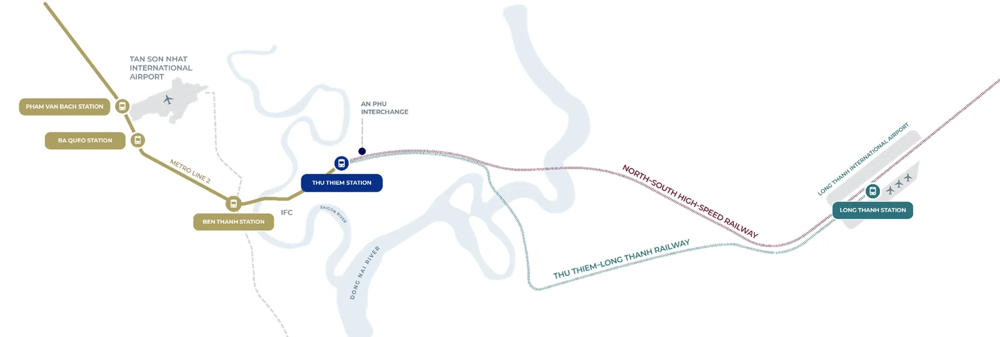
- Metro số 2 (Bến Thành – Thủ Thiêm)Khởi công 29/4/2026, mục tiêu hoàn thành toàn tuyến năm 2030. Kết nối về Bến Thành, Tân Sơn Nhất.
- Đường sắt Thủ Thiêm – Sân bay Long ThànhMục tiêu hoàn thành năm 2030, đưa khu vực nhà ga kết nối trực tiếp với sân bay quốc tế Long Thành.
- Đường sắt tốc độ cao Bắc – NamMục tiêu hoàn thành cơ bản năm 2035.
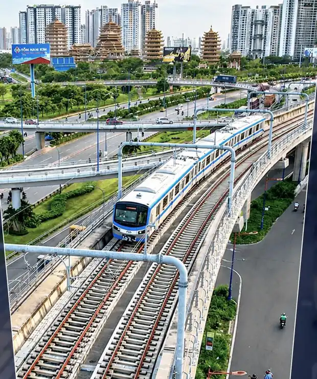
Mốc khởi công, hoàn thành theo tài liệu chủ đầu tư; tiến độ thực tế các tuyến căn cứ thông tin chính thức của cơ quan nhà nước.
Định hướng trung tâm kinh doanh – thương mại mới của TP.HCM
Dự án không chỉ là một khu phức hợp mà có tầm nhìn và triển vọng trở thành trung tâm kinh doanh – quốc tế mới của TP. Hồ Chí Minh.
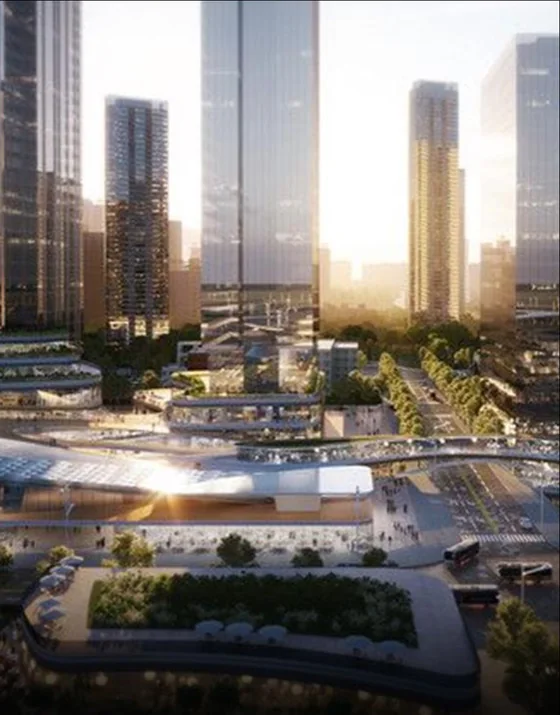
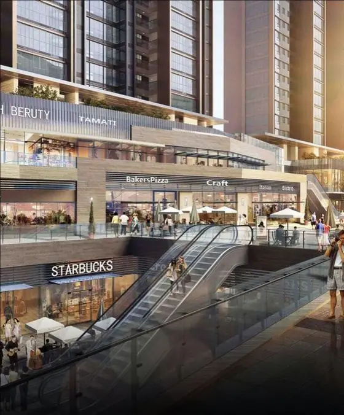
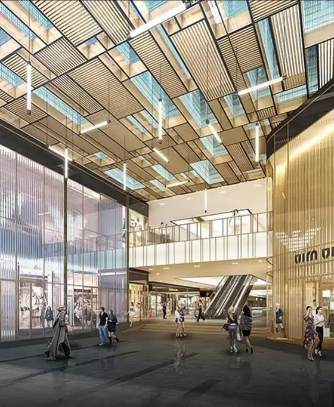
Mô hình TOD 5.0 – Nhà ga trở thành điểm đến
TOD (Transit-Oriented Development) là mô hình phát triển đô thị gắn với giao thông công cộng. Theo cách phân loại của chủ đầu tư, mỗi cấp độ thêm một lớp giá trị – đến TOD 5.0, dự án và nhà ga trở thành một điểm đến với yếu tố trải nghiệm.
- TOD 1.0
- Nhà ga
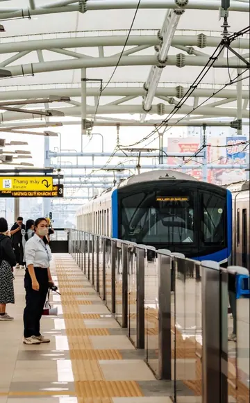
TP.HCM & Jakarta - TOD 2.0
- Nhà ga
- Kết nối công trình
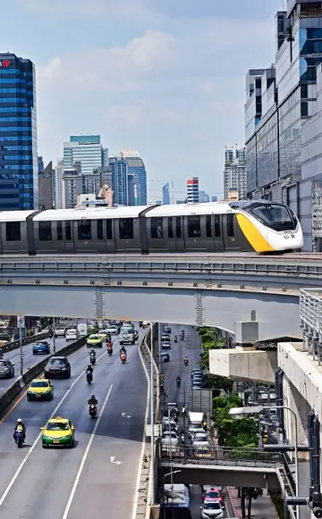
Bangkok - TOD 3.0
- Nhà ga
- Kết nối công trình
- Thành phố
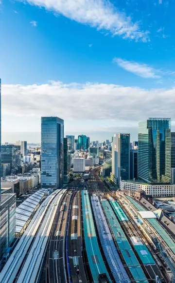
Hồng Kông - TOD 4.0
- Nhà ga
- Kết nối công trình
- Thành phố
- Không gian xanh
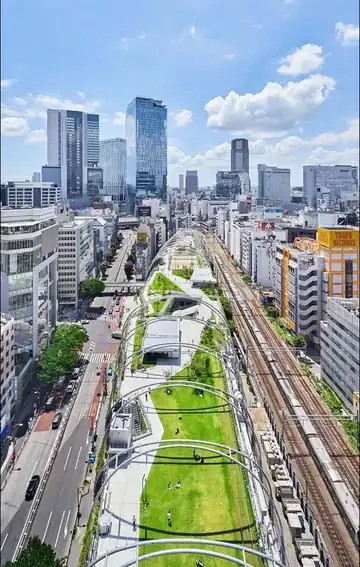
Tokyo - TOD 5.0
- Nhà ga
- Kết nối công trình
- Thành phố
- Không gian xanh
- Trải nghiệm điểm đến
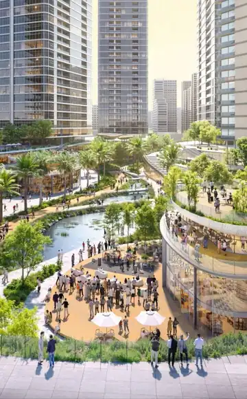
Ga Thủ Thiêm
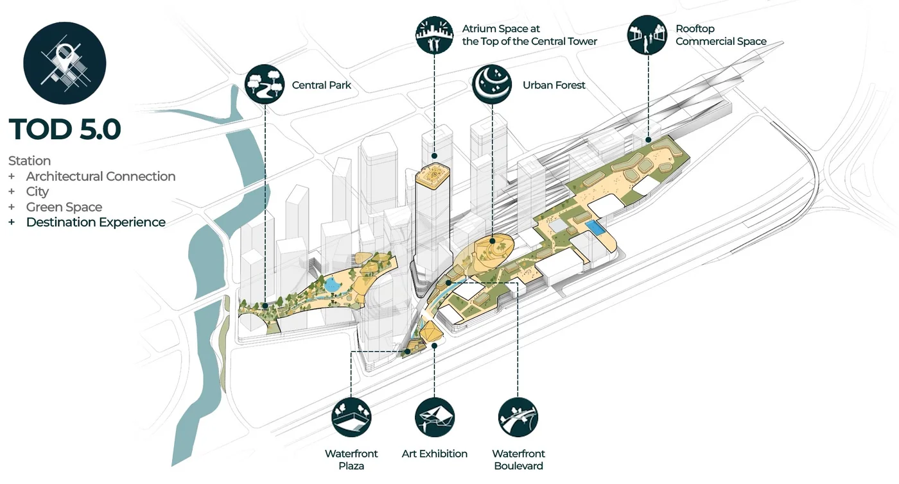
Không gian trải nghiệm theo ý tưởng
Mô hình đô thị TOD 5.0 giúp TP. Hồ Chí Minh rút ngắn hành trình phát triển, hướng tới một hệ sinh thái đô thị tích hợp theo các chuẩn mực tiên tiến của thế giới.
- Công viên trung tâm
- Rừng đô thị
- Thương mại trên mái
- Atrium trên đỉnh tháp trung tâm
- Quảng trường ven sông
- Đại lộ ven sông
- Triển lãm nghệ thuật
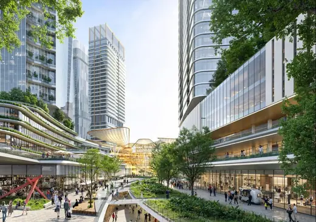
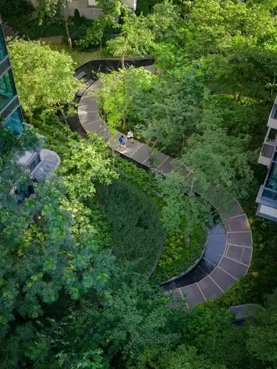
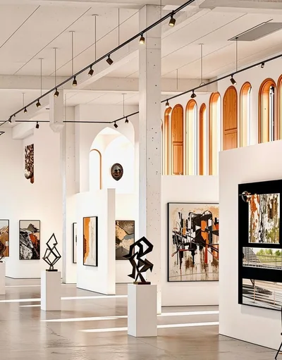
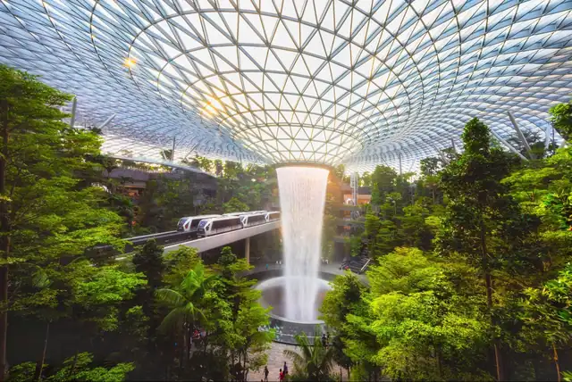
Đô thị phức hợp nổi tiếng trên thế giới
Các dự án biểu tượng trên thế giới lấy hạ tầng và giao thông làm cốt lõi, tích hợp đa chức năng và vận hành như một "điểm đến" dẫn dắt phát triển đô thị. Sân bay Changi (Singapore) là một tổ hợp hạ tầng với tư duy kiểu mẫu.
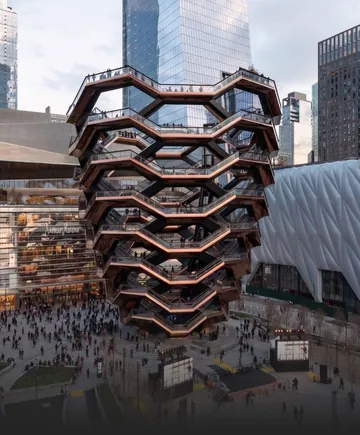
Hudson YardsNew York, Mỹ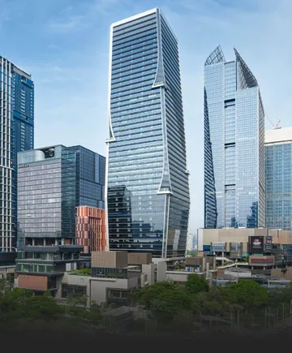
One BangkokBangkok, Thái Lan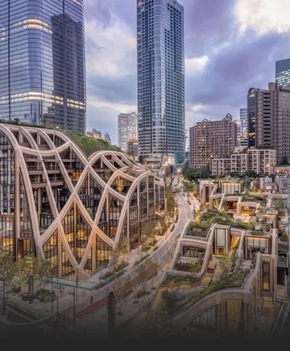
Azabudai HillsTokyo, Nhật Bản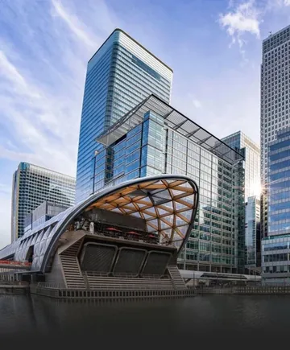
Canary WharfLondon, Anh
Giá trị dự án mang lại
Khu đô thị phức hợp Ga Thủ Thiêm được kỳ vọng trở thành một điểm đến quan trọng, đóng vai trò như một động lực phát triển kinh tế – xã hội của TP. Hồ Chí Minh.
-
Cho thành phố
- Thêm điểm đến du lịch
- Thu hút vốn đầu tư nước ngoài
- Nguồn thu ngân sách dài hạn
-
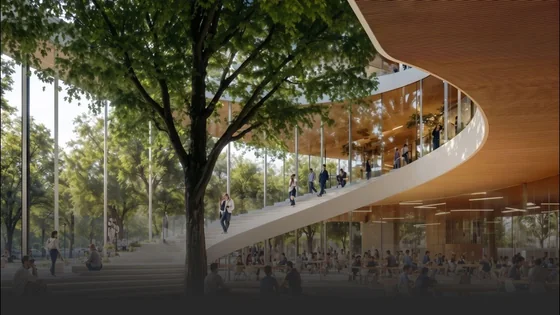
Cho cộng đồng
- Di chuyển thuận tiện, tối ưu thời gian
- Tiếp cận dịch vụ thương mại và không gian công cộng
- Tạo việc làm, trong đó có việc làm chất lượng cao
-
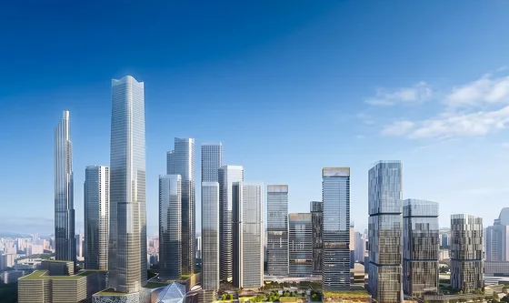
Cho diện mạo đô thị
- Công trình kiến trúc điểm nhấn
- Quy hoạch và thiết kế đồng bộ, hiện đại
Một biểu tượng mới, một tâm điểm mới, một niềm tự hào mới của người dân TP. Hồ Chí Minh và Việt Nam.
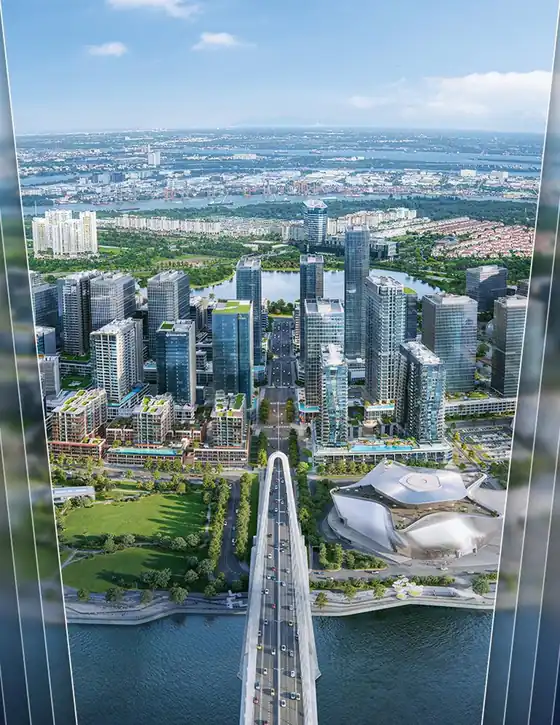
SonKim Land – Nhà phát triển The Metropole Thủ Thiêm
SonKim Land là nhà phát triển dự án The Metropole Thủ Thiêm – và là đơn vị phát triển ý tưởng Khu đô thị phức hợp Ga Thủ Thiêm theo mô hình TOD.
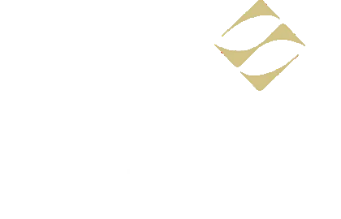
Khu đô thị phức hợp Ga Thủ Thiêm · tư vấn thiết kế quy hoạch và kiến trúc: NIKKEN (Nhật Bản).
Đội ngũ tư vấn quốc tế
Những bộ óc sáng tạo và đội ngũ chuyên gia hàng đầu thế giới được giới thiệu trong tài liệu dự án – chọn từng đơn vị để xem công trình tiêu biểu.
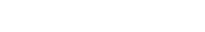
NIKKEN (Nhật Bản) là đơn vị tư vấn thiết kế quy hoạch và kiến trúc cho ý tưởng Khu đô thị phức hợp Ga Thủ Thiêm.
- Ý tưởng quy hoạch Khu đô thị phức hợp Ga Thủ Thiêm
Arup – đơn vị gắn với Nhà hát Opera Sydney, sân vận động Tổ Chim (Bắc Kinh), Marina Bay Sands.
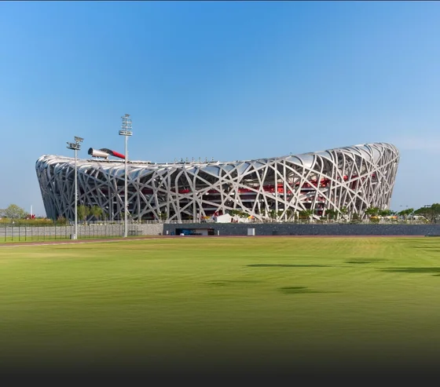
Sydney Opera House · Úc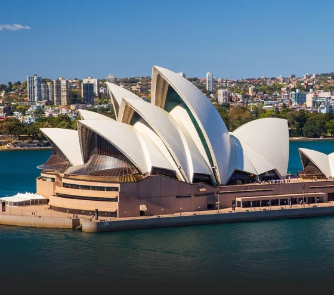
Sân vận động Tổ Chim · Bắc Kinh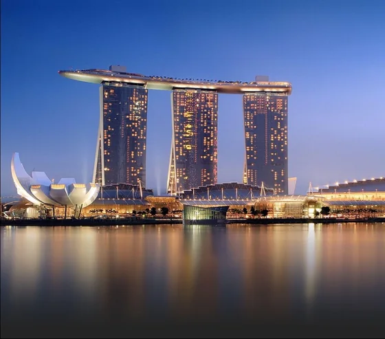
Marina Bay Sands · Singapore
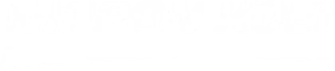
Nippon Koei – đơn vị gắn với các dự án hạ tầng đô thị như Jakarta MRT, Delhi Metro.
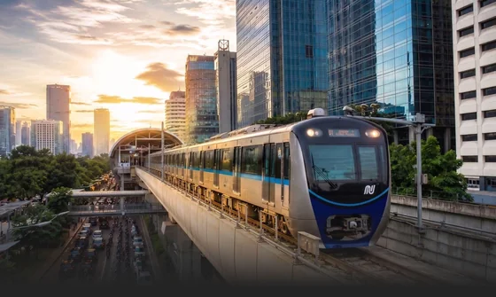
Jakarta MRT · Indonesia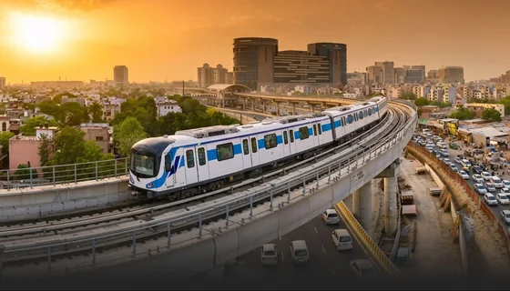
Delhi Metro · Ấn Độ
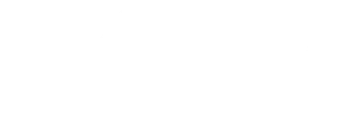
SOM – đơn vị gắn với Burj Khalifa, One World Trade Center, One Bangkok.
- Burj Khalifa · Dubai
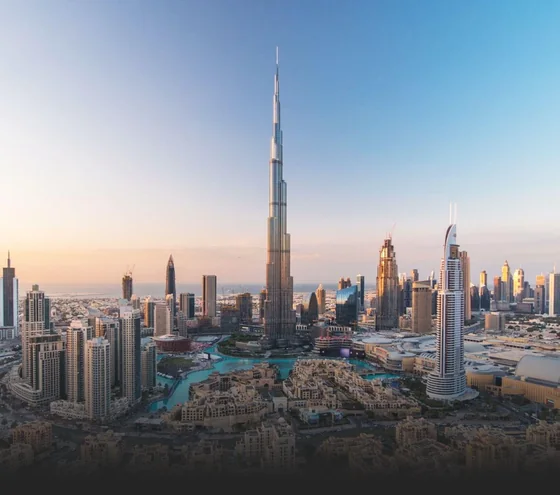
One World Trade Center · New York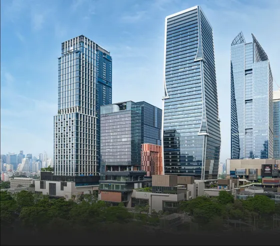
One Bangkok · Thái Lan
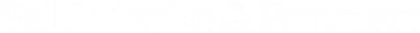
Pelli Clarke & Partners – đơn vị gắn với tháp đôi Petronas, IFC Hồng Kông, One Canada Square.
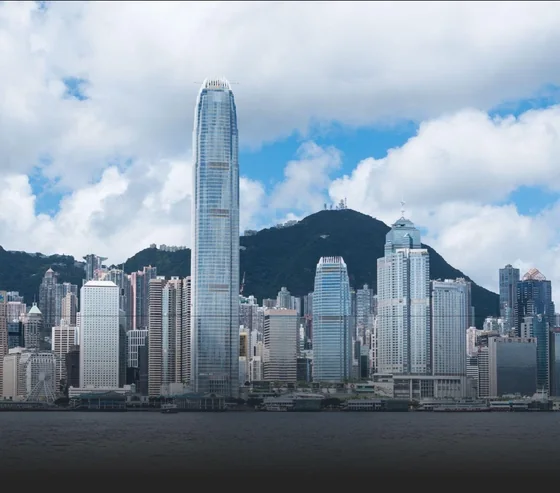
Petronas Towers · Kuala Lumpur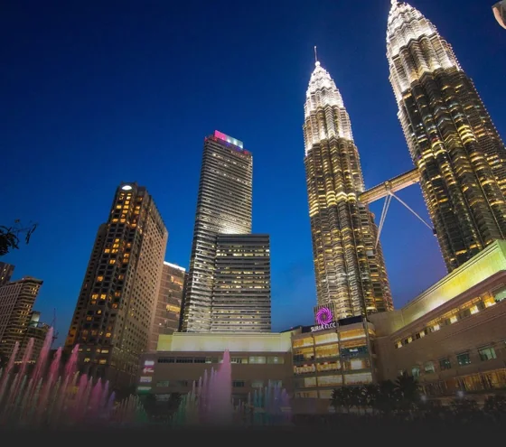
IFC · Hồng Kông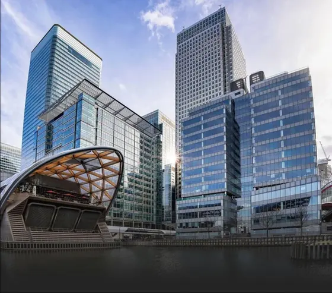
One Canada Square · London
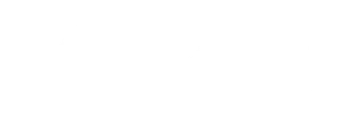
KPF – đơn vị gắn với Hudson Yards, International Commerce Centre, Shanghai World Financial Center.
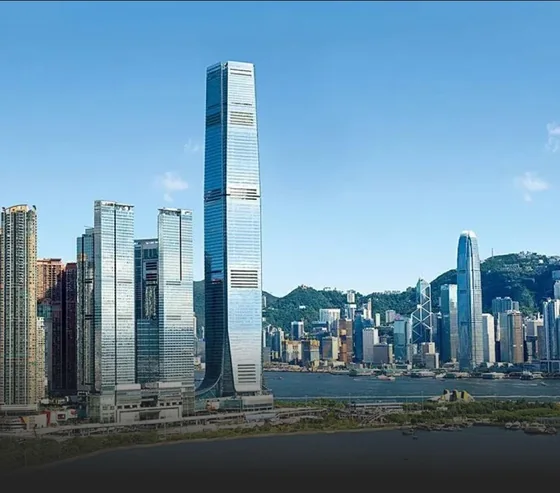
Hudson Yards · New York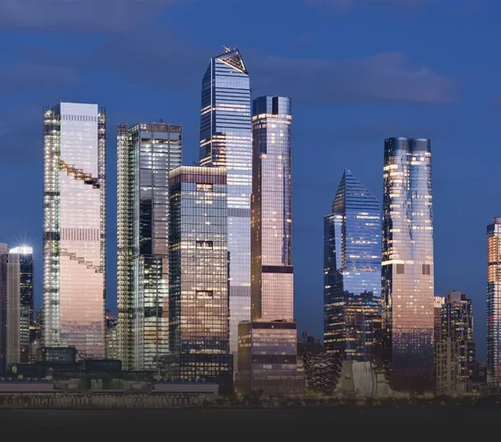
International Commerce Centre · Hồng Kông- Shanghai World Financial Center
Büro Ole Scheeren – đơn vị gắn với trụ sở CCTV, The Interlace, MahaNakhon.
- CCTV Headquarters · Bắc Kinh
- The Interlace · Singapore
- MahaNakhon · Bangkok
Heatherwick Studio – đơn vị gắn với Vessel, Azabudai Hills, Xi'an CCBD.
- Vessel · New York
- Azabudai Hills · Tokyo
- Xi'an CCBD · Tây An
NIKKEN là đơn vị tư vấn thiết kế quy hoạch và kiến trúc. Các đơn vị còn lại được giới thiệu cùng trong tài liệu dự án; vai trò cụ thể theo công bố chính thức của chủ đầu tư. Hình công trình tiêu biểu của từng đơn vị mang tính tham khảo.
Những điều nên biết về Ga Thủ Thiêm
Khu đô thị phức hợp Ga Thủ Thiêm ở đâu?
Dự án nằm tại khu vực nhà ga Thủ Thiêm theo quy hoạch, gần nút giao An Phú, TP. Hồ Chí Minh – nơi quy hoạch giao nhau của tuyến Metro số 2, đường sắt Thủ Thiêm – Long Thành và đường sắt tốc độ cao Bắc – Nam.
Ai phát triển Khu đô thị phức hợp Ga Thủ Thiêm?
Dự án do SonKim Land – nhà phát triển The Metropole Thủ Thiêm – phát triển; NIKKEN (Nhật Bản) tư vấn thiết kế quy hoạch và kiến trúc. ERA Vietnam là đại lý phân phối.
Dự án đang ở giai đoạn nào?
Khu đô thị phức hợp Ga Thủ Thiêm đang ở giai đoạn ý tưởng phát triển. Quy mô, sản phẩm và thông tin dự án có thể điều chỉnh theo phê duyệt của cơ quan nhà nước có thẩm quyền và công bố chính thức của chủ đầu tư.
Ga Thủ Thiêm có những tuyến đường sắt nào?
Theo quy hoạch, ga Thủ Thiêm là điểm giao của Metro số 2 (Bến Thành – Thủ Thiêm, khởi công 29/4/2026, mục tiêu hoàn thành năm 2030), đường sắt Thủ Thiêm – Sân bay Long Thành (mục tiêu hoàn thành năm 2030) và đường sắt tốc độ cao Bắc – Nam (mục tiêu hoàn thành cơ bản năm 2035).
Mô hình TOD 5.0 là gì?
TOD là mô hình phát triển đô thị gắn với giao thông công cộng. Theo cách phân loại của chủ đầu tư, TOD 1.0 là nhà ga; 2.0 thêm kết nối công trình; 3.0 thêm thành phố; 4.0 thêm không gian xanh; 5.0 thêm trải nghiệm điểm đến – nhà ga và dự án trở thành một điểm đến.
Từ Ga Thủ Thiêm đến các khu vực trọng điểm mất bao lâu?
Thời gian tham khảo: khoảng 10 phút đến Khu đô thị mới Thủ Thiêm, 15 phút đến Trung tâm Tài chính Quốc tế Việt Nam tại TP.HCM, 20 phút đến Thảo Điền và Khu Công nghệ cao, 30 phút đến sân bay Tân Sơn Nhất, 60 phút đến sân bay quốc tế Long Thành.
Dự án mang lại giá trị gì cho TP. Hồ Chí Minh?
Cho thành phố: thêm điểm đến du lịch, thu hút vốn đầu tư nước ngoài, nguồn thu ngân sách dài hạn. Cho cộng đồng: di chuyển thuận tiện, tiếp cận dịch vụ thương mại và không gian công cộng, tạo việc làm. Cho diện mạo đô thị: công trình kiến trúc điểm nhấn, quy hoạch đồng bộ.
Làm sao nhận thông tin chính thức về dự án?
Quý khách đăng ký nhận thông tin với ERA Vietnam để được cập nhật tiến độ quy hoạch, hạ tầng và thông tin chính thức khi chủ đầu tư công bố.
Đăng ký nhận thông tin dự án Khu đô thị phức hợp Ga Thủ Thiêm
Nhận cập nhật về tiến độ quy hoạch, hạ tầng và thông tin chính thức từ ERA Vietnam khi dự án công bố.
- Tiến độ quy hoạch khu vực nhà ga Thủ Thiêm
- Cập nhật hạ tầng Metro số 2 và các tuyến đường sắt
- Thông tin chính thức khi chủ đầu tư công bố
- Đầu tư
- Văn phòng – thương mại
- Thông tin chung
Chuyên viên ERA gọi lại cập nhật thông tin chính thức cho anh/chị ngay khi dự án công bố.
Thông tin, hình ảnh mang tính tham khảo; dự án đang ở giai đoạn ý tưởng, có thể điều chỉnh theo phê duyệt của cơ quan nhà nước có thẩm quyền.
Hoặc gọi ngay 094.1125.000